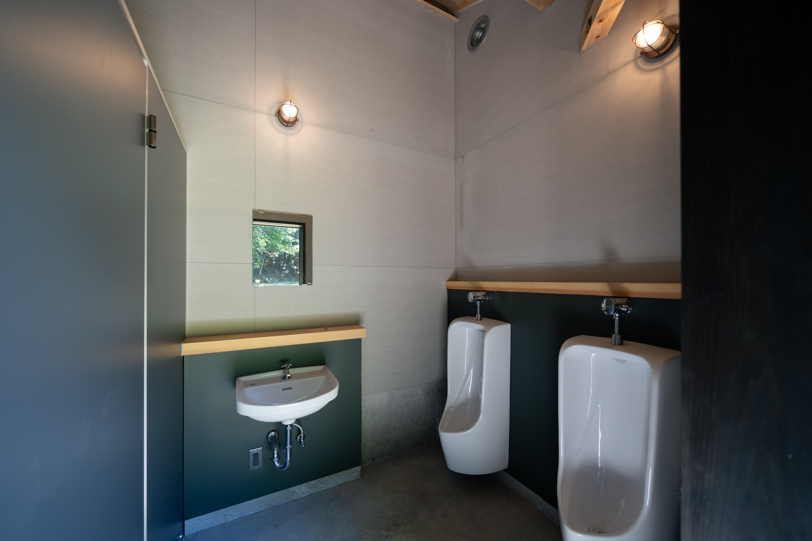
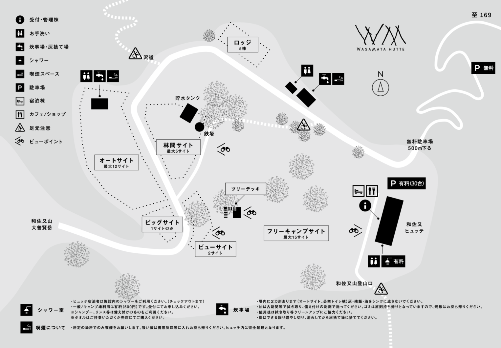

Campsite
Scroll


Campsite
かつてのスキー場を活用したキャンプフィールド。標高 1150m の高原で、360度自然に囲まれた環境。朝日が昇る東方向、夜は満天の星空が広がります。テント設営から自炊、焚き火まで、自分たちのペースで楽しめるキャンプ体験。
広々とした斜面を活かしたキャンプフィールドは、各サイトが独立した空間を保ちながらも、炊事場やトイレなどの共有施設にアクセスしやすい設計になっています。
春は新緑、夏は涼しい風、秋は紅葉、冬は静寂の雪景色。四季折々の自然を感じながら、心身をリフレッシュできる場所です。

標準・グループ向けの多様なサイトから選択可能
初心者から経験者まで、好みに合わせて選べる
朝日、星空、四季の自然を満喫
面積: 約 20 坪
地面: 平坦で張りやすい
向き: 東向き（朝日が当たりやすい）
キャンプ初心者から経験者まで、最も人気のサイト。地面が平坦で張り設営が簡単です。朝日が当たるため、朝食の準備も快適。
面積: 約 40 坪
地面: 広々とした斜面
向き: 南向き（昼間の日当たり良好）
グループ・ファミリー向け。複数のテントを設営できる広さがあります。昼間の日当たりが良好で、BBQ などの昼間のアクティビティに最適。